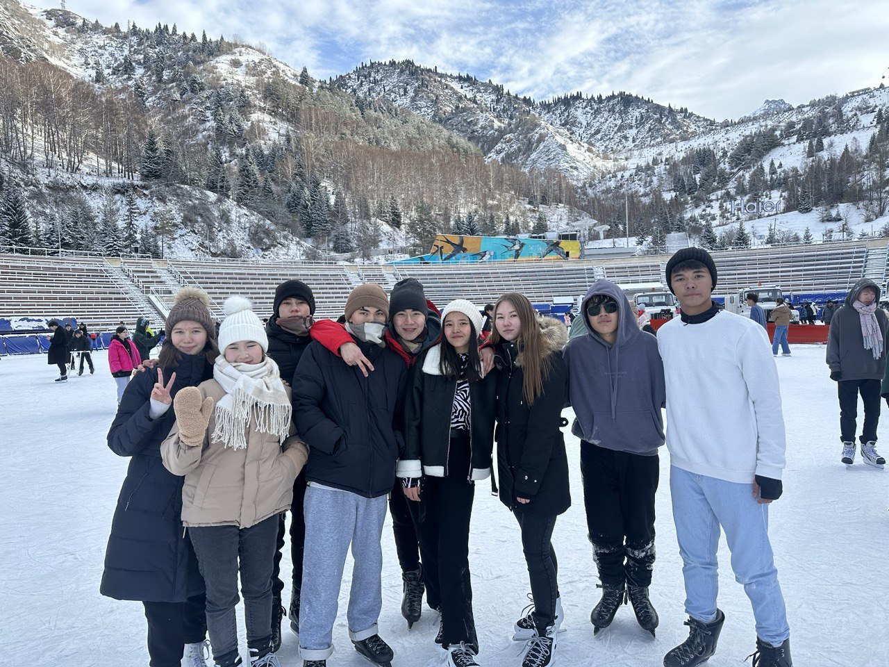

Now I’d like to introduce you to the people who are always by my side — my family (not
real). These are the ones
who inspire me every day and support me in everything I do. Let me tell you more about them!

At the beginning of my first semester, I had the privilege of meeting some incredible people. As
time passed, our connection grew stronger, and they quickly became more than just acquaintances—they
became close friends with whom I share both joy and support. However, among them, a few have become
especially dear to me: Adelya, Bakdaulet, Tolebi, Asylbek, Ayazhan, and Aibar. They
have made this
chapter of my life truly unforgettable, filling it with genuine smiles, heartfelt conversations, and
the kind of friendship that lasts forever. In many ways, they have become my family too, always
there for me, and I’m grateful to call them a part of my life.